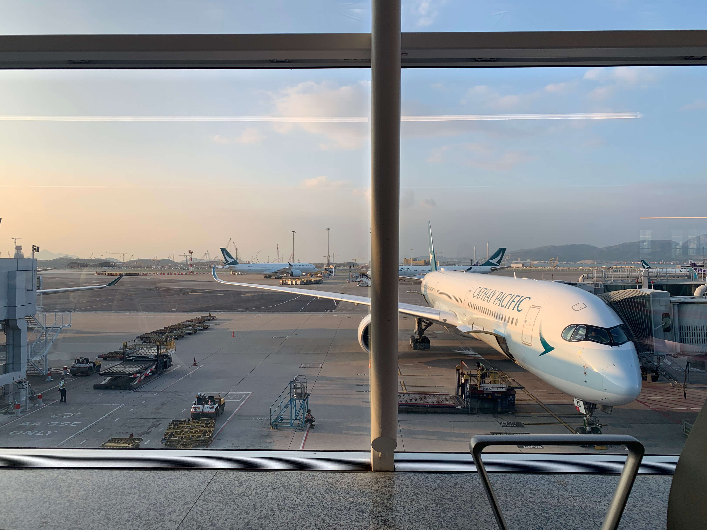

The Day Everything Changed
Every journey begins with a single step, but mine began with a single boarding pass.
On April 6, 2017, I stood inside Tribhuvan International Airport in Kathmandu with emotions I had never experienced before. Excitement, uncertainty, fear, and hope all existed together in one moment. My passport was in my hand, my suitcase was beside me, and my heart was filled with dreams that stretched far beyond the mountains where I had grown up.
I wasn't simply travelling to another country. I was leaving behind everything familiar — my family, my friends, my hometown of Pokhara, and the life I had always known. Ahead of me was Japan, a country I had only seen in photographs and documentaries, a place whose language I could barely speak and whose culture was completely different from my own.
At that moment, I didn't know exactly what the future would hold. I only knew that if I wanted my life to change, I had to be brave enough to take the first step.
Practical details
- Departure: Tribhuvan International Airport, Kathmandu
- Destination: Japan
- Date: April 6, 2017